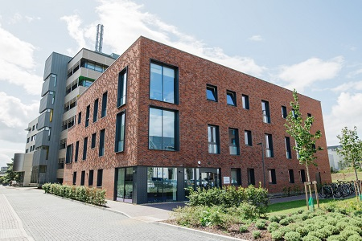

Contact
The Neurometabolic Imaging Lab is based at the Centre for Human Brain Health, School of Psychology, University of Birmingham, Edgbaston, Birmingham, B15 2TT, UK.
Martin Wilson is the lab leader, office 104, tel. EXT 48833.

Taxi: Edgebaston Park Hotel, 53 Edgbaston Park Road, B15 2RS.
Car: North East Car Park, 52 Pritchatts Rd, Birmingham B15 2SA.
Train: 10 min walk from University station.